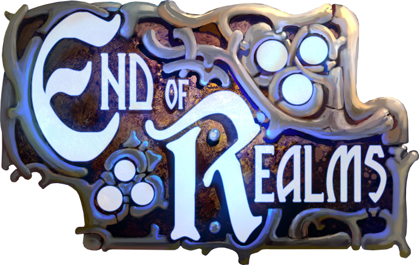

Projects I've been involved in:

End of Realms
End of Realms is a 2D, turn-based RPG where travel is inspired by classic board games.
It is currently available only for Microsoft Windows and Linux on
Steam,
but an Android port might be done at some point in the future.
End of Realms was built using
Cocos2d-x, C++ and Lua